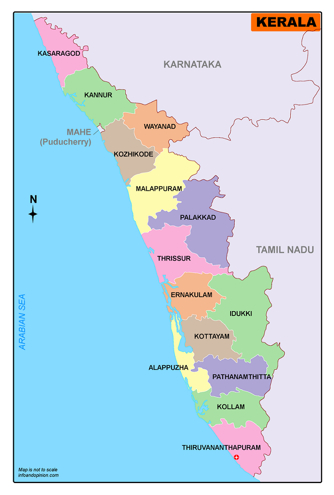

Capital: Thiruvananthapuram
Statehood: 1 November 1956
Currency: Indian Rupee (INR)
Area: 38,863 km2
Population: 34,630,192 (2018 est.)
Language: Official: Malayalam, English
Time Zone: UTC +5:30
Kerala, a state in Southern India is known as a tropical paradise of waving palms
and wide sandy beaches. It is a narrow strip of coastal territory that slopes
down the Western Ghats in a cascade of lush green vegetation, and reaches to the Arabian sea. Kerala borders the states
of Tamil Nadu to the east and Karnataka to the north. It is also known for its backwaters, mountains, coconuts, spices and art forms like
Kathakali and Mohini Attam. It is the most literate state in India, and a land of diverse religions, where you can find Hindu temples,
mosques, churches, and even synagogues. With world class tourist sporting options, ayurvedic spas and treatments, eco-tourism initiatives,
a large number of visit options ranging from beautiful high altitude blue mountains to pristine rain forests to golden sun-sand beaches and an
enormous range of accommodation, Kerala has much to offer the visitor.

The production of pepper and natural rubber contributes significantly to the total national output. In the agricultural sector, coconut, tea, coffee,
cashew and spices are important. The state's coastline extends for 595 kilometres (370 mi), and around 1.1 million people in the state are dependent on
the fishery industry which contributes 3% to the state's income. The state has the highest media exposure in India with newspapers publishing in nine
languages, mainly English and Malayalam. Kerala is one of the prominent tourist destinations of India, with backwaters, hill stations, beaches, Ayurvedic
tourism and tropical greenery as its major attractions.
The culture of Kerala is composite and cosmopolitan in nature and it is an integral part of Indian culture. It is synthesis of Aryan and Dravidian
cultures, defined by its antiquity and the organic continuity sustained by the Malayali people. It was elaborated through centuries of contact
with neighbouring and overseas cultures. However, the geographical insularity of Kerala from the rest of the country has resulted in the development
of a distinctive lifestyle, art, architecture, language, literature and social institutions. Over 10,000 festivals are celebrated in the state every
year. The Malayalam calendar, a solar sidereal calendar started from 825 CE in Kerala, finds common usage in planning agricultural and religious
activities. Malayalam, one of the classical languages in India, is Kerala's official language.